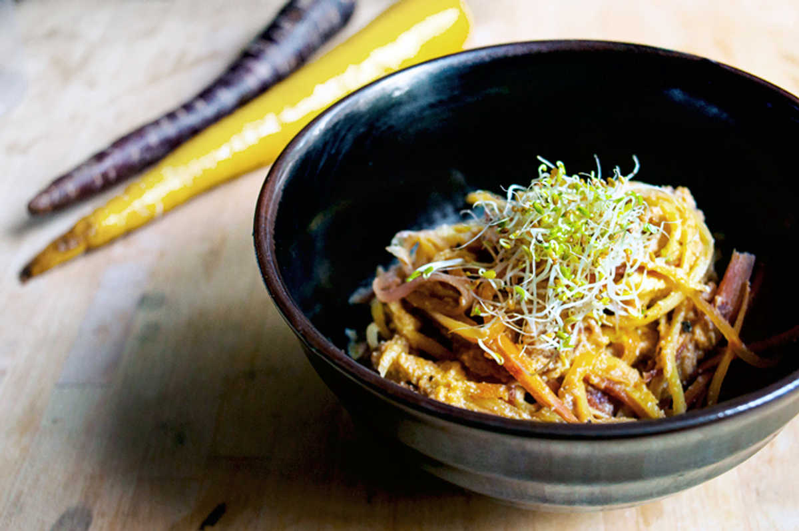

cheesy sunflower seed sauce
2 servings — 20 minutes
Rekka is allergic to tree nuts, but this doesn't mean that our choices of 'vegan cheeses' are limited. Seeds and treenuts are interchangeable in many recipes and produce similar results, while being just as creamy and just as nutritious.
To soften the seeds, it's possible to quick-boil them. This makes it easier to grind down into a sauce. If you've got the time, soaking them for 1-2h is a better option (ref).
Sprouting sunflower seeds is another good nutritious option, but I haven't had much luck sprouting mine.
 sunflower seeds70 g
sunflower seeds70 g water120 ml
water120 ml soy sauce15 ml
soy sauce15 ml smoked paprika5 g
smoked paprika5 g yellow onion1
yellow onion1 garlic2 cloves
garlic2 cloves white miso5 g
white miso5 g nutritional yeast8 g
nutritional yeast8 g
sunflower sauce
- Soak 70 g (1/2 cup) of sunflower seeds in water, for 1-2 hours. Rinse and strain, keep aside.
- Sautee 1 chopped yellow onion and 2 minced garlic cloves in a pan with 5 ml of olive oil. Cook until onion is translucent.
- Purée sunflower seeds in a blender with the cooked garlic and onion, 15 ml (1 tbsp) of soy sauce, 5 g (1 tsp) of smoked paprika, 5 g (1 tsp) of white miso, 8 g (2 tbsp) of nutritional yeast and 120 ml (1/2 cup) of water. Blend until smooth.